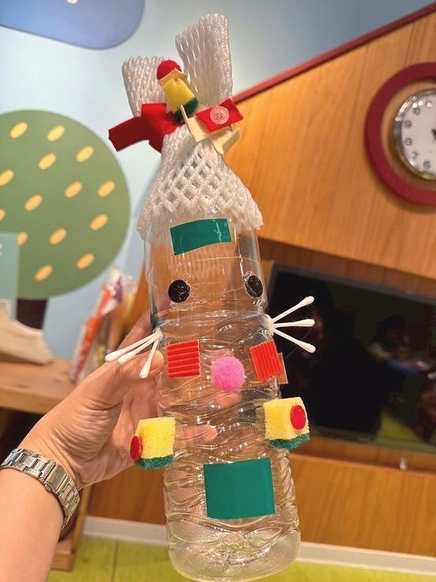

創作技法說明
不預設材料功能 , 而是提供多樣媒材 (毛線、棉花、布料、玻璃紙、泡棉、金屬紙等) 讓孩子自由探索、混搭使用 , 甚至允許「破壞、拼接、改造」。
17. 媒材解放法 ( Medium Liberation Pedagogy ) 孩子在這裡不是「使用材料」 , 而是與材料建立一種自由而開放的關係。

不預設材料功能 , 而是提供多樣媒材 (毛線、棉花、布料、玻璃紙、泡棉、金屬紙等) 讓孩子自由探索、混搭使用 , 甚至允許「破壞、拼接、改造」。
孩子在這個方法中，不只是使用材料或學習技巧，而是在嘗試中建立自己的判斷：我看見了什麼？我想怎麼改變？我可以用什麼方式表達？這些過程會慢慢累積成孩子面對世界的感受力、思考力與創造力。